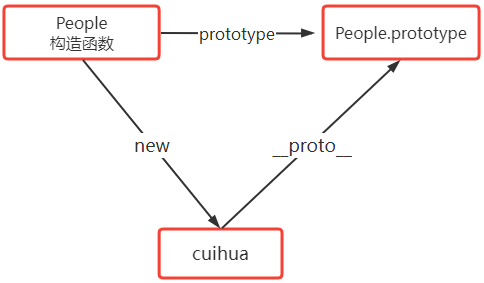

一、对象的基本概念
现实生活角度-理解对象
- 在现实生活中，万物皆对象，对象是一个具体的，看得见摸得着的实实在在存在的实物。
- 如：一个苹果，一本书，一个杯子，一个人等，这些实实在在存在颜的实物，就是一个对象。
- 一个对象有两个重要的组成部分：属性、功能
属性 功能 可以简单理解为一个对象的特征和外观等，如：形状、颜色、气味、大小、重量、味道 可以简单的理解为一个对象功能和行为等，他能用来做什么
JavaScript 语言角度-理解对象
- 在 JavaScript 中,对象是由一组无序的相关属性和方法的集合。
- JS 中的对象，本质就是用代码来模拟现实生活中的对象，他由属性和方法两个部分组成。
- 对象属性与现实生活中对象的属性是对应
- 对象方法与现实生活中对象的功能是对应
比如，我们要在 JS 中定义一个手机对象，我们可以写成如下：
// 定义了一个手机对象
var phone = {
brand: "苹果", // 品牌名
size: "5.8英寸", // 手机尺寸
color: "黑色", // 颜色
weight: "100g", // 重量
quality: "铝合金", // 材质
ringUp: function () {
console.log("打电话"); // 方法：打电话
},
playMovie: function () {
console.log("播放电影"); // 方法： 播放电影
},
// 更多方法省略......
};
- 为什么需要对象
- 前面我们学过变量和数组，如果要保存一个基本数据类型的值，我们可以用变量来保存; 如果要保存一且具有相关性的值和数据，我们可以用数组;
- 但如果要保存一个完整的对象（比如人）的信息？变量和数组呢都不能做到
- 而对象的形式保存数据，非常直观和清淅，很明确的知道每一项保存的是什么信息。
var person = {
name: "小明",
sex: "女",
age: 45,
weight: 45,
height: 128,
};
二、对象的创建
在 JS 中创建一个对象有以下三种方式：
- 利用字面量方式，创建一个对象
- 利用
new Object()方式，创建对象- 利用构造函数方式，创建一个对象
- 字面量方式创建对象
// 对象的抽象写法
var obj = {
key:value,
key:value,
....
}
>
// 创建一个对象
var obj = {
name:'小明', // 属性
age:23, // 属性
sing:function(){ // 方法
console.log('我在唱歌')
}
}
>
// 创建一个空对象 对象中没有任何属性和方法
var obj = {};
语法解读
- {}表示的就是一个对象，我们把这个对象赋值给到一个变量，我们通过变量来访问这个对象。
- {}括号里面表达了对象的属性和方法，对象的属性和方法，是以键值对的形式来书写的
key: value;键值对形式， key表示属性名，value表示属性值，即： name: ‘小明’- name、age 就是对象的属性
- sing 是对象的方法，其实他也是对象属性，不过一个属性的值如果是一个函数，我们把这个属性称为对象的方法
- 属性的值，可以是任意的数据类型
- 每个属性之间用
,逗号隔开- 最后一个属性,逗号不写
- 对象中属性名规范
- 如果对象的属性名符合JS 标识符命名规范，则属性名不需要加双引号
- 否则就需要用
“”双引号 或''单引号包裹起来 - 标识符命名规范：只能以字母，数字，_下划线，$组成，但不能以数字开头
- 对象中的属性名，如果是一个变量，则必需用
[]的方式来书写
var name = "abc";
var person = {
[name]: "清心", //abc="清心“
["age"]: 18, // 注意这里，age是一个字符串，不是一个变量
hobby: ["游泳", "健身", "阅读"],
"to-sleep": function () {
// to-sleep命名不符合标识符命名规范，则用''包裹
console.log("我要睡觉了");
},
};
三、对象属性的操作
- 访问对象中的属性
- 我们可用对象打点的方式来访问对象中的属性，即：对象.属性名
- 如果属性名不符合 JS 标识符命名规范，则必须用方括号的写法来访问，即： 对象[“属性名”]
- []方括中的属性名，必需用’’单引号或””双引号包裹
- 如果属性名以变量的形式存储，则可以使用方括号的形式访问，即 ：对象[变量名]
- 如果访问对象中，不存在的属性，不会报错，其值为 undefined
// 创建了一个对象
var user = {
name: "清心",
age: 18,
sex: "女",
"my-hobbies": ["篮球", "画画", "阅读", "编程"],
};
>
// 对象打点访问对象中的属性值
console.log(user.name); // 清心
console.log(user.age); // 18
console.log(user.sex); // 女
//如果属性名不符合 JS 标识符命名规范
console.log(user["my-hobbies"]); // ["篮球", "画画", "阅读", "编程"]
//如果属性名以变量的形式存储
var key = "name";
console.log(user[key]); // 清心
//如果访问对象中，不存在的属性
console.log(user.weight); // undefined
注意
- 对象中的属性名，如果是一个变量 和 属性名以变量的形式存储是不一样的
var name = "abc";
//属性名以变量的形式存储
var key = "height";
>
var person = {
//对象中的属性名，如果是一个变量,则必需用[]的方式来书写
[name]: "hermia",
height: 188,
};
console.log(person);
//{abc:"hermia", height:188}
>
//如果属性名以变量的形式存储,则以使用方括号的形式访问
console.log(person[key]);
//188
- 添加或修改对象属性值
- 我们通过
对象.属性名 = 属性值或对象[属性名] = 属性值的方式来添加或修改对象的属性值 - 如果属性名不存在，则为对象添加属性
- 如果属性名存在，则相当于修改属性的值。
- 我们通过
// 定义一个对象 dog
var dog = {
name: "小黑",
"skin-color": "黑色",
};
>
dog.name = "小红"; // 修改属性值
dog["skin-color"] = "红色"; // 修改属性值
- 删除对象属性
- 如果要删除某个属性，则使用
delete obj.属性
- 如果要删除某个属性，则使用
// 创建一个对象
var dog = {
name: "小黑",
"skin-color": "黑色",
age: 18,
};
delete dog.name; // 删除属性
delete dog["skin-color"]; // 删除属性
console.log(dog); // {age: 18}
四、对象方法的操作
- 如果对象的某个属性值是一个函数，则我们把他称为对象的方法
- 我们采用
对象.属性名()或对象[属性名]()的方式来调用对象的方法
var user = {
name: "清心
age: 18,
sayHello: function () {
console.log("大家好，我是清心，永远18岁 ！");
},
"to-sleep": function () {
console.log("我正在睡觉");
},
};
user.sayHello(); // 大家好，我是清心，永远18岁 ！
user["to-sleep"](); // 我正在睡觉
console.log(user.sayHello);
//f(){
console.log("大家好，我是清心，永远18岁 ！");
}
- 属性名后加
()是调用方法，不加括号是打印该方法- 对象方法的修改，新增、删除和属性的操作方法是一样，不过我们一般不会对一个对象的方法去做这些操作。
- 方法和函数的关系
- 方法也是函数，只不过方法是对象的 “属性” ，它需要用对象打点调用等方式调用
- 我们之前讲的 Math.random()随机函数，本质上 random 就是 Math 对象上的一个方法
五、对象的遍历
- 我们使用
for....in ....循环来遍历对象- 使用
for...in...循环可以遍历对象的每个键for...in...只能遍历对象的非符号键属性
- for…in…循环语句语法
// obj 要遍历的对象
// key 循环变量，它会依次成为对象的每一个键
// key 可以换成任何标识符，只是在长期的习惯中，大家习惯用key来表示对象的键，用来遍历
for (var key in obj) {
console.log("对象obj的属性" + key + "的值是：" + obj[key]);
}
- key是变量，它会依次成为对象的每一个键；
- 对象的属性名以变量的形式存储，则可以使用方括号的形式访问
- for…in…只能遍历对象的非符号键属性
var s = Symbol("符号属性");
var obj = {
a: 1,
b: 2,
c: 3,
[s]: "我用for-in无法遍历", // 符号属性
};
for (var key in obj) {
console.log(key + ":" + obj[key]);
}
- 数组也是一个对象，他的属性名就是对应的索引下标 0,1,2…. 他也可以用 for…in 遍历
var arr = ["A", "B", "C", "D"];
for (var key in arr) {
console.log(key); // 0 1 2 3
console.log(arr[key]); // A B C D
}
//相当于：
arr={
0:A
1:B
2:C
3:D
}
六、对象的深克隆与浅克隆
- 复习
数据类型 举例 变量中存储内容 赋值 ==和===比较时基本数据类型 数字型、字符串型、布尔型、null 空类型、undefined类型 变量中存的是值 把值复制一份，来赋值 ==比较值是否相等;===比较值和类型引用数据类型 对象、数组、函数 变量中存的是地址 把地址复制一份，来赋值 == 和 === 比较的都是地址
如果要判断一个值是否为
null或undefined
- 由于
null==undefined，所以：
if(num==null || num==undefined) return;
if(num==null) return;
第一句可以写成第二句，意思相同
但是不能写成全等
- 基本数据类型，赋值 和 == 、=== 比较
- 基本数据类型在使用
==来比较时，会自动进行隐式转换
- 基本数据类型在使用
// 基本数据类型
var a = 10;
var b = a;
a = 20;
console.log(a, b); // 20 ,10
>
// == 和 ===比较
console.log("5" == 5);
console.log("5" === 5);
- 引用数据类型，赋值 和 == 、=== 比较
- 引用数据类型是进行地址的比较
var arr1 = [1, 2, 3];
var arr2 = arr1;
//arr1和arr2指向的是同一个地址
arr1[0] = "A";
console.log(arr1); // ['A', 2, 3]
console.log(arr2); // ['A', 2, 3]
>
// == 和 === 比较
console.log(arr1 == arr2); // true
console.log(arr1 === arr2); // true
console.log([1, 2] == [1, 2]); // false
console.log([1, 2] === [1, 2]); // false
- 对象是引用类型
对象是引用类型值，这意味着：
- 不能使用
var obj2 = obj1这样的语法克隆一个对象 - 使用
==或===进行对象的比较时，比较的也是两个对象是否指向堆内存中的同一个地址
- 不能使用
- 对象 == 或 ===比较时
// 案例一
var obj1 = {
a: 1,
b: 2,
c: 3,
};
var obj2 = {
a: 1,
b: 2,
c: 3,
};
>
console.log(obj1 == obj2); // false
console.log(obj1 === obj2); // false
>
console.log({} == {}); // false
console.log({} === {}); // false
- 对象赋值
- 对象赋值，本质也是把对象存在栈内存中的地址赋值给另一个变量
var obj1 = {
a: 1,
b: 2,
};
var obj2 = obj1;
obj2.a = "A";
console.log(obj1); // {a: 'A', b: 2}
console.log(obj2); // {a: 'A', b: 2}
- 对象的浅克隆
- 对象的浅克隆，本质也就是只能克隆对象的第一层
- 我们创建一个新的空对象
obj1，然后遍历现在的对象 obj，把对象的属性全部遍历出来，添加obj中 - 基本数据类型，复制的是值，不会受原数组影响
- 数组和对象，复制的是地址，与原数组会相互影响
// 用来克隆的对象
var obj = {
a: 1,
b: 2,
c: ["你", "我", "他"],
};
>
// 被克隆后的对象
var obj1 = {};
// 浅克隆对象
for (var key in obj) {
obj1[key] = obj[key]; // 赋值
}
>
obj1.a = "A";
console.log(obj);
//{a: 1, b: 2 , c: ["你", "我", "他"]}
console.log(obj1);
//{a: "A", b: 2 , c: ["你", "我", "他"]}
>
console.log(obj1.c == obj.c); // true
obj1["c"].push("哈哈");//改变了它的数据类型
>
console.log(obj);
//{a: 1, b: 2 , c: ["你", "我", "他"]}
console.log(obj1);
//{a: "A", b: 2 , c: ["你", "我", "他","哈哈"]}
- 对象的深克隆
- 深克隆：就是克隆对象的所有，不论对象的属性值是否是引用类型，都能将它们实现克隆
- 深克隆后原对象与克隆后的对象，克隆出来后长的一样，但本质两者都互相独立，互不干扰。
以下对象克隆，只考对象{} 、数组[]、函数、基本数据类型，其它 es6 相关的类型暂时不考虑
递归实现深克隆
- 判断传过来的数据类是数组，还是对象，还是其它数据类型
function depClone(obj) {
var result;
//判断第一层
if (Array.isArray(obj)) {
//传过来的是数组
result = [];
for (var i = 0; i < obj.length; i++) {
result.push(depClone(obj[i]));
}
} else if (Object.prototype.toString.call(obj) == "[object Object]") {
//传过来的是对象
result = {};
for (var key in obj) {
result[key] = depClone(obj[key]);
}
} else {
//传过来的是基本数据类型
return obj;
}
return result;
}
七、this 关键字
最好不要在全局作用域下声明一个叫
name的变量，因为它在window里已经存在，是预留变量
- this 是什么
在函数中，其内部
this指向把函数当成方法调用的上下文对象
- 什么是上下文 ？
- 垃圾分类，这是非常好的习惯，值得表扬。
- 随手关灯，这是非常好的习惯，值得表扬。
- 这里的 “这” 字，就是这个语句的上下文。
- 就是说 “这” 这个代词的意思是需要通过这条中文语句的前言后语来判断
this指向把函数当成方法调用的上下文对象，即谁来调用这个函数或方法，当前函数或方法体内的this就指向谁。- 所以 this 的指向在定义时是不确定的，只有在调用的时候才能被确定
- 接下来，我们来看下面几个不同场景下，函数内部的 this 指向
- 函数作为普通函数直接调用
- 函数作为对象的方法被调用
- 函数.call() 与 函数.apply()方式调用
- 函数作为构造器被调用
- 函数作为普通函数直接调用
函数名()的方式调用函数，其本质是window.函数名()的方式在调用函数- 所以这种方式调用函数，函数内部的
this指向window。 谁调用函数，this 就是谁所有全局作用域下声明的变量和函数，都是 window 对象的属性
var a = 10;
var b = 20;
function sum() {
return this.a + this.b;
}
console.log(sum());
- IIFE 立即执行函数
- 立即执行函数，本质也是 window 对象调用的，所以其内部 this 指向 window
(function(){
})()
//表示立即执行该函数，执行完即刻销毁
- 函数作为对象的方法被调用
- 函数作为对象的方法被调用，this 指向这个对象，谁调用函数，this 就是谁
// 定义一个对象
var dog = {
name: "小黑",
"skin-color": "黑色",
say: function () {
console.log("我叫" + this.name + "，因为我的毛是" + this["skin-color"]);
console.log(this);
},
};
dog.say(); // this 是 dog对象
var say2 = dog.say;
say2(); // this 是 window对象
- 当代码执行到
var say2 = dog.say时，本质是把函数当做值赋给了变量say2，即
var say2 = function () {
console.log("我叫" + this.name + "，因为我的毛是" + this["skin-color"]);
console.log(this);
};
- 所以往后执行 say2() 时，本质是 window 对象调用了这个函数。
- 数组下标
- 数组（类数组对象）枚举出函数进行调用，this 指向的是这个数组（类数组对象）
- 谁调用函数，this 就是谁
var arr = [
"A",
2,
3,
function () {
console.log(this[0]);
},
];
arr[3](); // A 这里 函数是数组身上的一个属性
console.log(arr); //打印出数组arr
var fn = arr[3];
fn(); // undefined 这里的this是window
- 测试题
- 题1：
var obj1 = {
a: 1,
b: 2,
sum: function () {
return this.a + this.b;
},
};
var obj2 = {
a: 3,
b: 4,
sum: obj1.sum, // 这里只是完成简单的赋值操作
};
console.log(obj2.sum()); // 7
>// 相当于：
var obj2 = {
a: 3,
b: 4,
sum: function () {
return this.a + this.b;
},
}
console.log(obj2.sum());//obj2调用了函数，this是obj2
- 题2：
function add() {
var a = 1,
b = 2;
return {
// 将对作为返回值，返回
a: 10,
b: 20,
sum: function () {
return this.a + this.b;
},
};
}
console.log(add().sum()); // 30
>//先执行add(),得到返回值：
{ a: 10,
b: 20,
sum: function () {
return this.a + this.b;
}
}
>//返回的函数调用sum(),this指的就是该函数
- 题3：
var a = 1;
var b = 2;
function add() {
return this.a + this.b;
}
var obj = {
a: 10,
b: add(), // 该函数执行后才赋值给b，this是window 得出结果是 3
sum: add,
};
var result = obj.sum();
console.log(result); //13
>//也就是：
var obj = {
a: 10,
b: 3,
sum: function add() {
return this.a + this.b;//obj调用的sum函数
},
};
console.log(obj.sum());
- 题四：
var a = 1;
var obj = {
a: 2,
add: (function () {
var a = this.a; // 立即执行函数的this是window，则this.a得到1
return function () {
console.log(a + this.a);
};
})(),
};
obj.add(); // 3
>//obj.add()首先得到返回函数
return function () {
console.log(a + this.a);
//第一个a根据作用域可知，等于上面的1；
//是obj调用的add函数,所以this指obj,a=2
};
- call 与 apply 更改 this 指向
- 函数调用
call()和apply()方法，可以更改this的指向，同时立即执行 call()和apply()方法中的第一个参数是一个对象，这个对象指向函数内部的 this- apply中的参数必须用方括号包裹
- 函数调用
// obj 是一个对象，此时，函数内部的this指向了obj
// 这种方式，类似于把函数当成了obj的方法来使用
函数.call(obj, arg1, arg2, arg3);
函数.apply(obj, [arg1, arg2, arg3]);
- 我们来看一个案例，定义一个方法，用来统计数组中所有数字之和
var arr1 = [1, 2, 3, 4, 5];
var arr2 = [5, 6, 7, 4, 3];
>
// 函数 sum用来统计数组中所有元素之后
function sum() {
var result = 0;
for (var i = 0; i < this.length; i++) {
result += this[i];
}
return result;
}
>
console.log(sum.call(arr1));
console.log(sum.call(arr2));
console.log(sum.apply(arr1));
console.log(sum.apply(arr2));
- 重点
- 某个函数或方法调用 call 时，等同于把方法或函数作为 call 的第一个参数的方法在调用。即：
- 函数.call(obj) 和 函数.apply(obj) 的方式，类似于把函数转换成了对象obj身上的方法来使用
fn.call(obj,arg1,arg2) 等同于 obj.fn(arg1,arg2)- 但obj身上不会真的添加fn方法，只是类似于把fn当成obj的方法一样使用
var obj = {
a: 1,
b: 2,
};
function fn() {
console.log(this.a + this.b);
}
fn.call(obj);
//fn.call(obj)相当于：
var obj = {
a: 1,
b: 2,
fn:function fn() {
console.log(this.a + this.b);
}，
};
- call 和 apply 的注意事项
- 如果 call 和 apply 的第一个参数
obj - 当obj 是一个
null或undefined时，其函数会自动将 this 替换为指向全局对象 - 如果 obj 是一个原始值(基本数据类型)会被包装成一个对象
- 如果 call 和 apply 的第一个参数
function fn() {
console.log(this);
}
fn.call(null); //window {}
fn.apply(undefined);//window {}
fn.call(1);// Number {1}
fn.call("abc");// String {"abc"}
fn.call(true);// Boolean {true}
- bind 函数
- bind方法创建一个新的函数（简单理解为原函数的拷贝）
- bind在使用时是返回一个新函数，需要接收后再调用
- 在bind被调时，这个新函数的this被指定为bind()的第一个参数。
- 其余参数将作为新函数的参数，供调用时使用。
var fn2 = fn.bind(thisArg, arg1, arg2, arg3);
- bind 用法一： 改变 this 指向
var obj = {
a: 1,
b: 2,
c: 3,
};
function sum(a, b, c) {
console.log(this.a, this.b, c);
}
// 这里的fn接收sum的拷贝函数，此时fn函数内部的this变成了obj
var fn = sum.bind(obj, "A", "B", "C");
//调用新函数
fn();
- 不改变this时,thisArg可以填null或undefined
- bind 用法二：创建一个拥有预设参数列表
也就是我们在第一次调用 bind 方法时，除了第一个参数外，后面还可以传递
>= 0个参数
var obj = {
a: 1,
b: 2,
c: 3,
};
var c = 5;
function sum(a, b, c) {
console.log(a, this.b, c);
}
// 创建一个函数，它拥有预设的第一个参数
var fn = sum.bind(obj, "A");
fn("B", "C");//补充参数，相当于(obj, "A","B","C")
- bind 返回的新函数，作为构造函数使用
- 如果 bind 返回的新函数作为构造函数，则会忽略 thisArg 这个参数
- 也就是不更改原函数中 this，其作为构造函数使用，内部的 this 是 new 出来的实例对象
// 构造函数
function Point(x, y) {
this.x = x;
this.y = y;
}
Point.prototype.getPosition = function () {
console.log("指向位置" + this.x, this.y);
};
>
var Fn = Point.bind([], 1);
>
// bind返回的新函数和调用的函数是两个函数，只是长得一样
console.log(Fn);
console.log(Fn === Point); // false
console.log(Fn.prototype === Point.prototype); // false
>
// point1是Point的实例, 并不是Fn的实例,也不是[]的实例
var point1 = new Fn(2);
console.log(point1); // Point {x: 1, y: 2}
console.log(point1 instanceof Point); // true
console.log(point1.__proto__ === Point.prototype); // true
>
// point1是Point实例，所以point1能访问Point.prototype上的属性
point1.getPosition();
特别注意
- 我们返回的新函数，每一个函数，都有自己的 prototype
- 如何让新函数的 prototype 指向原函数的 prototype，两者相互独立呢？
- bind 注意事项
如果 bind 的第一个参数
thisArg- 是一个
null或undefined时，其函数会自动将this替换为指向全局对象 - 是一个原始值会被包装成一个对象
- 是一个
var obj = {
a: 1,
b: 2,
c: 3,
};
function sum(a, b, c) {
console.log(this);
}
var fn1 = sum.bind();
var fn2 = sum.bind(null);
var fn3 = sum.bind(1);
fn1(3, 4);//window
fn2(3, 4);//window
fn3(3, 4);//Number{1}
- bind总结
var fn2 = fn.bind(thisArg, arg1, arg2);- fn 调用 bind 方法，相当于 fn 被当成了 thisArg 对象身上的方法，即 thisArg.fn();
- 但是，函数调用 bind 方法，并不会立即执行 fn 函数，而是返回一个新的函数 fn2
- 当调用 fn2 时，相当于内部执行了
thisArg.fn();
- call、apply、bind 的区别和使用场景
- call,apply和bind方法就是Function原型中的方法，所以所有的函数都可以使用这三个方法
| 作用相同 | 传参方式不同 | 返回值不同 | |
|---|---|---|---|
| call | 用来改变 this 指向 | 第一参数是 thisArg，后续参数是一个参数列表 | 立即执行函数，返回值为原函数返回值 |
| apply | 用来改变 this 指向 | 第一参数是 thisArg,后续参数是包含一个或多个参数的数组 | 立即执行函数，返回值为原函数返回值 |
| bind | 用来改变 this 指向 | 第一参数是 thisArg，后续参数是一个参数列表 | 返回一个新函数，相当于原函数拷贝 |
改变 this 指向，本质就是把某个函数当成对象的方法来使用。
- this 指向总结
函数的调用方式 this 指向 对象.函数() 对象 函数名() window IIFE 立即执行函数 window 数组下标 数组 call(对象,arg1,arg2) 对象 apply(对象,arry) 对象 bind(对象,arg1,arg2) 对象 定时器中的回调函数 window DOM 事件处理函数 添加事件监听的元素 new 函数() 对象的实例
数组[下标]()这种方式，数组就是一个对象，下标就是他的属性，所以数组[下标]()就是调用数组身上的方法
八、构造函数与类
在学习构造函数之前，我们来思考一个问题，我们如何批量创建一批相似的对象（结构相似）？
- 比如说，我们现在要批量创建下面这样一批对象，这些对象有相同的属性和方法，我们会如何创建
相似对象（人） 属性 方法 小明 姓名：小明，年龄：22 岁，性别：男 自我介绍：大家好，我是小明，性别男，今年 22 小红 姓名：小红，年龄：32 岁，性别：女 自我介绍：大家好，我是小红，性别女，今年 32 小丽 姓名：小丽，年龄：43 岁，性别：女 自我介绍：大家好，我是小丽，性别女，今年 43
- 根据之前学过的知识，可以一个一个来单独创建
// 创建对象小明
var obj1 = {
name: "小明",
age: 22,
sex: "男",
sayHello: function () {
console.log("大家好，我叫" + this.name + "," + this.sex + "今年" + obj.age);
},
};
显然是不合理的，如果我们要创建 100 个这样的相似对象，难道我们要写 100 次吗 ？
- 工厂方法 - 批量创建对象
- 利用函数的封装特性来创建对象，只要调用下函数，就能产生一个类似的对象，我们把这种方式称为工厂模式。
- 因为他有点类似于工厂批量生产物品，把材料放到机器中，修改下参数，就能出来一个类似的物品。
function Person(name, age, sex) {
var obj = {};
obj.name = name;
obj.age = age;
obj.sex = sex;
obj.sayHello = function () {
console.log(
"大家好，我叫" + this.name + "," + this.sex + "," + "今年" + obj.age
);
};
return obj;
}
// 创建对象小明
var obj1 = Person("小明", 22, "男");
console.log(obj1); //{name: '小明', age: 22,sex:'男'，sayHello:f}
obj1.sayHello(); //大家好，我叫小明，男，今年22
>
// 用来创建狗对象的 函数
function Dog(name, age) {
var obj = {};
obj.name = name;
obj.age = age;
return obj;
}
var dog = Dog("小黑", 7);
console.log(dog); //{name: '小黑', age: 7}
>//检测类型
console.log(typeof obj1); // object
console.log(typeof dog); // object
工厂方式创建对象，看似完美，其实他还有一个很大的问题 !
- 我们用
typeof来检测两个对象的类型时，得到的都是Object，也就是我们用这种方法创建出来的对象，我们是没有办法区分他们的具体类型。- 如果我们希望在类型检测时得到的是 Person 和 Dog 类型，那要如何办呢？这就需要用到我们接下来讲到的构建函数的方式创建对象
构造函数 - 创建对象
- 用
new调用一个函数，这个函数就被称为构造函数，任何函数都可以是构造函数，只需要用new调用它。 - 构造函数：主要用来在创建对象时初始化对象， 即为对象成员变量赋初始值
- 构造函数的首字母需要大写，这是开发者约定的规范，并非说首字不大写就是错
- 声明一个变量接收不同参数的new函数
var p1 = new Person("小明", 22, "男");
- 用
new 调用函数四步曲
- 第一步：会在函数体内自动创建一个新的空对象{} 即：
var obj = {} - 第二步：函数体内的 this 被赋值为这个新对象, 即
this = obj - 第三步：从上往下，执行函数体内的代码，相当于给新创建的空对象 obj 添加属性
- 第四步：函数体内代码执行完，会自动返回创建的新对象 obj（所以构造函数体内不需要 return）
提示：在第一步和第二步中间，其实还省略了一步：将新对象 obj 的__proto__指向构造函数的prototype属性
- 第一步：会在函数体内自动创建一个新的空对象{} 即：
// 用来创建人对象的 函数
function Person(name, age, sex) {
// 第一步：创建一个新对象 var obj={ }
// 第二步：把函数体内的this指向新对象 this=obj;
this.name = name;
this.age = age;
this.sex = sex;
// 第三步：从上往下执行代码，相当于给obj对象添加属性
// obj.name=name,obj.age=age,obj.sex=sex
// 第四步：代码执行完，自动返回obj这个对象，相当于return obj;
}
>
// new调用函数
var p1 = new Person("小明", 22, "男");
console.log(p1); //Person{name:'小明'，age:22,sex:'男'}
var p2 = new Person("小红", 32, "女");
console.log(p2); //Person{name:'小红'，age:32,sex:'女'}
其实最后
p1 = this = obj，也就是 p1 和 this 都指向 new 调用函数 内部新创建的对象 obj。
构造函数中的 this 指向
- 构造函数中的 this，指向的是 new 调用函数 创建出来的新对象
构造函数注意事项
- 一定要记住：一个函数是不是构造函数，要看它是否用 new 调用，而至于名称首字母大写，完全是开发者的习惯约定
- 如果一个函数名首字母大写，但调用是没有用 new，而是直接调用，其不是构造函数，内部 this 指向 window
function People(name, age, sex) {
this.name = name;
this.age = age;
this.sex = sex;
console.log(this);
}
//直接调用，this指向window
People("arry老师", 18, "男");
//new调用,this指向新创建的对象
var p1=new People("arry老师", 18, "男");
- 构造函数的问题
- 构造函数虽然很有用，但也有他的问题存在。他的主要问题在于，其定义的方法会在每个实例上都创建一遍。
- 如果我们用这个构造函数创建出来 10 个实例，那这 10 个实例上都有相同的方法，这些相同的方法在创建实都会单独占用一定的内存空间，所以增大了内存的开销。
- 但是这些方法本质上是做的相同的事情，所以没必要定义那么多同名函数。
- 当然，我们可以把这些方法写在外面，然后在构造函数中引用他们，如下：
function Person(name, age, sex) {
this.name = name;
this.age = age;
this.sex = sex;
this.sayHello = sayHello;
}
>
function sayHello() {
console.log("大家好，我叫" + this.name + "," + this.sex + "今年" + this.age);
}
>
var p = new Person("小明", 32, "男");
p.sayHello();
- 但这种做法，会造成全局作用域的污染。因为这些(函数)方法只是供这些对象来调用的。
- 在 JS 中为每个函数提供了原型这个属性，后面我们可以通过原型的方实来解决。后面接下来就会学到。
九、类和实例（对象）
- 现实生活角度理解类和实例
什么是类
- 我们常说分门别类，其实就是根据事物的特点、性质将其分成各种门类。
- 这里的类并不指具体的东西，而是一类具有相同特点事物抽象的一个分类。
- 类好比一类物体的抽象出来的一个画像或模型。
什么是实例 - 实例可以理解为我们之前说的对象，他是一个实实在在，能摸得着，看得见的实物。
- 类可以理解为模型，那实例就是由模型制作出来的具体的一件东西。
- 区分类与实例
类 实例 苹果、书包、人、动物、小猫、狗 这个苹果、小明的书包、清心、这条黑狗
JS 角度来理解类和实例
什么是类
- 在 JS 中，类是用来描述对象会拥有那些属性和方法，但是并不具体指明属性的值。
- JS 中的构造函数就好比是一个类，他只描述了这个类有那些属性和方法，但并不具体指明属性的值。
什么是实例 - 在 JS 中，实例就可以理解为 JS 中的对象，他有自己的属性和方法，同时有自己的属性值
- 我们用 new 调用函数，本质就是创建了一个对象（实例化一个对象），我们称为对象实例化
- 对象实例化： 是指将一个类实例化成对象,即用类创建对象的过程
构造函数描述出属性和方法，new调用函数、赋值来创建不同实例
创建一个球类和球对象
- 要求将创建好的球对象，添加到 body 中，在页面呈现出来。
类 属性 方法 球 半径、颜色、透明度、坐标、DOM 元素 初始化，变色，运动
- 要求将创建好的球对象，添加到 body 中，在页面呈现出来。
// 构建函数,描述出对象和方法
// 对象：半径、颜色、透明度、坐标、DOM属性
// 方法：init()初始化将DOM插入到网页中、运动、改变颜色
function Ball(r, color, opacity, x, y) {
this.r = r;
this.color = color;
this.opacity = opacity;
this.x = x;
this.y = y;
// 初始化小球，把球插入到页面中
this.init = function () {
// 创建一个真实的DOM球放在页面中展示
this.dom = document.createElement("div");
this.dom.style.width = this.r + "px";
this.dom.style.height = this.r + "px";
this.dom.style.borderRadius = this.r + "px";
this.dom.style.backgroundColor = this.color;
this.dom.style.opacity = this.opacity;
//一个球要动起来，必须是个定位元素
this.dom.style.position = "absolute";
this.dom.style.left = this.x + "px";
this.dom.style.top = this.y + "px";
// 将小球添加到body上
document.body.appendChild(this.dom);
};
// 当我调用这个方法，就让小球动起来
this.move = function () {
this.dom.style.left = this.x + 250 + "px";
this.dom.style.top = this.y + 250 + "px";
};
// 当我调用这个方法，就让小球变色
this.changeColor = function () {
this.dom.style.backgroundColor = "skyblue";
};
}
//new一个对象实例
var ball = new Ball(100, "pink", 0.5, 100, 100);
ball.init(); // 初始化
ball.changeColor(); // 变色
ball.move(); // 移动
- Javascript是基于对象（object-based）的语言，他并不是完全面向对象（object-oriented）语言。
- java 、c++等是 “面向对象（object-oriented）” 语言
十、Object() 构造函数
Object 构造函数将给定的值包装为一个新对象。
- 如果给定的值是
null或undefined, 它会创建并返回一个空对象。- 否则，它将返回一个和给定的值相对应的类型的对象。
- 如果给定值是一个已经存在的对象，则会返回这个已经存在的值（相同地址）。
- 语法：
new Object();
new Object(value);
- 创建一个新对象
var obj = new Object();
console.log(obj); // {}
obj.a = 1;
obj.b = 2;
console.log(obj); // {a: 1, b: 2}
>
// 如果给定的值是`null`或 `undefined`, 它会创建并返回一个空对象
var obj1 = new Object(null);
var obj2 = new Object(undefined);
console.log(obj1); // {}
console.log(obj2); // {}
>
// 给定值是基本数据类型 数字、字符串、boolean值
var strObject = new Object("字符串包装成一个对象");
console.log(strObject); // String {'字符串包装成一个对象'}
>
var numberObject = new Object(11);
console.log(strObject); // Number {11}
>
var booleanObject = new Object(true);
console.log(strObject); // Boolean {true}
>
// 给定值本身就是一个对象，返回这个对象
var arr = [1, 2, 3];
arrObject = new Object(arr);
console.log(arr); // [1, 2, 3]
十一、原型（prototype）和原型链
- 什么是原型（prototype）
- 任何函数都有一个
prototype属性，prototype的翻译成英语，就是“原型”的意思 prototype属性值是一个对象，这个对象中拥有一个constructor属性，这个属性指向这个函数本身。
- 任何函数都有一个
function sum(a, b) {
return a + b;
}
>
console.log(sum.prototype); // {constructor: ƒ}
console.log(typeof sum.prototype); // object
console.log(sum.prototype.constructor === sum); // true
对于普通函数， prototype属性没有任何用处，而 构造函数的 prototype 属性非常有用
- 构造函数的 prototype 属性
- 构造函数的prototype属性是它的实例的原型
- 在构造函数的实例中有一个隐含的属性
__proto__，指向该构造函数的原型prototype实例.__proto__===构造函数.prototype
实例的__proto__属性，指向构造函数的原型 prototype，到底有什么用 ？
- 答案就是：原型链查找
- 什么是原型链查找
- 构造函数的原型
prototype对象，相当于一个公共的区域，所有同一个类的实例都可以访问到这个原型对象 - 所以我们可以将对象中共有的内容，统一设置到原型对象中。
- 当我们通过对象访问属性时，会按照属性的名称开始查找，他最先开始在对象实例本身来查找，如果在实例身上找到了，则返回该属性对应的值。
- 如果没有找到，会去原型对象中寻找，如果原型对象中有，则使用
- 如原型对象中没有，则继续去原型的原型中寻找，直到找到
Object对象的原型 - Object 对象的原型没有原型，如果在 Object 对象的原型中依然没有，则返回
undefined对象访问属性时，会沿着原型去查找，好比原型形成了一个链条，一层一层向上找，我们把这种现象称为 原型链查找 。
- 构造函数的原型
function People(name, age, sex) {
this.name = name;
this.age = age;
this.sex = sex;
}
>
// 在构造函数的prototype上添加nationality属性
People.prototype.nationality = "中国";
>
// 实例化
var cuihua = new People("翠花", 18, "男");
>
console.log(cuihua.nationality); // 输出：中国，这个就叫做原型链查找
console.log(cuihua); // {name: '翠花', age: 18, sex: '男'}
>
// 总结：当一个对象打点调用一个属性时，这个对象的身上并没有这个属性的时候，系统并不会直接报错，它会寻找这个对象的原型上有没有这个属性，如果能找到这个属性，则证明打点调用是可以的
JS 规定：一个对象（或一个实例）是可以打点调用原型上的属性的；因此：cuihua 是可以打点调用 nationality 属性的
- 原型链的遮蔽效应
- 我们说当访问对象中的属性时，会先在自身找，如果找到就用自身的。
- 也就是说，如果自身有一个与原型对象上同名的属性，那自然在查找时，会以自身的为主
- 这就相当于原型上的同名属性被遮蔽了，我们把这种现象称为原型链的遮蔽效应
function People(name, age, sex) {
this.name = name;
this.age = age;
this.sex = sex;
}
// 在构造函数的prototype(原型)上添加nationality属性
People.prototype.nationality = "中国";
// 实例化
var cuihua = new People("翠花", 18, "男");
// 再实例化一个mini对象
var mini = new People("mini", 19, "女");
// 给mini本身添加nationality属性
mini.nationality = "美国";
>
console.log(cuihua.nationality); // 输出：中国
console.log(cuihua); // {name: '翠花', age: 18, sex: '男'}
>
console.log(mini.nationality); // 输出：美国，这就是原型链的遮蔽效应
- hasOwnProperty
hasOwnProperty方法可以检查对象是否真正 “自己拥有” 某属性或者方法- 也就是这个属性或方法，是在实例本身身上，并不是在原型上。
- 如果是真正自身属性，返回 true，否则返回 false
function People(name, age, sex) {
this.name = name;
this.age = age;
this.sex = sex;
}
// 在构造函数的prototype(原型)上添加nationality属性
People.prototype.nationality = "中国";
//new一个实例
var cuihua = new People("翠花", 18, "男");
>
console.log(cuihua.hasOwnProperty("name")); // true
console.log(cuihua.hasOwnProperty("age")); // true
console.log(cuihua.hasOwnProperty("sex")); // true
console.log(cuihua.hasOwnProperty("nationality")); // false
- in
- in 运算符只能检查某个属性或方法是否可以被对象访问，不能检查是否是自己的属性或方法
- 也就是不管这个属性是对象自身还是原型上的，都返回 true,找不到，则返回 false
function People(name, age, sex) {
this.name = name;
this.age = age;
this.sex = sex;
}
// 在构造函数的prototype(原型)上添加nationality属性
People.prototype.nationality = "中国";
var cuihua = new People("翠花", 18, "男");
console.log("name" in cuihua); // true
console.log("age" in cuihua); // true
console.log("sex" in cuihua); // true
console.log("nationality" in cuihua); // true
- 在 prototype 添加方法
- 在之前的课程中，我们把方法都是直接写到了构造函数身上，这种方式会造成内存的浪费，因为每创建一个实例，就需要单独为同一个方法分配一块内存空间。
- 如果将方法写在构造函数的原型 prototype 上，就不会了，因为并不会创建一个实例，就为方法分配一块内存，所有实例都是共用原型上的同一个方法。
- 写在构造函数身上
function Count(a, b) {
this.a = a;
this.b = b;
// 方法写在构造函数中
this.add = function () {
return this.a + this.b;
};
}
>
var c1 = new Count(2, 3);
var c2 = new Count(2, 3);
var c3 = new Count(2, 3);
// 指向内存中的不同地址，每个对象身上的方法都分配了一块内存
console.log(c1.add === c2.add); // false
console.log(c2.add === c3.add); // false
- 写在构造函数的原型上
function Count(a, b) {
this.a = a;
this.b = b;
}
// 将方法，加在构造函数的原型上
Count.prototype.add = function () {
return this.a + this.b;
};
>
var c1 = new Count(2, 3);
var c2 = new Count(3, 3);
var c3 = new Count(6, 3);
console.log(c1.add === c2.add); // true
console.log(c2.add === c3.add); // true;
console.log(c1.add(), c2.add(), c3.add()); // 5 6 9
- 原型链的终点
- 原型对象也是对象，所以原型也有原型，最终所有的对象都会继承 Object 的原型
- Object 原型的的原型是
null，即原型链的终点
function People(name, age) {
this.name = name;
this.age = age;
}
>
var p1 = new People("小丽", 32);
console.log(People.prototype === p1.__proto__);
console.log(People.prototype.__proto__ === Object.prototype);
console.log(Object.prototype.__proto__ === null);
- 原型链
- 数组是
Array类（构造函数）构造出来的，Array的原型指向Object的原型
var arr = [123, 55, 33, 66, 88];
>
console.log(arr.__proto__ === Array.prototype); // true
console.log(Array.prototype.__proto__ === Object.prototype);
console.log(arr.__proto__.__proto__ === Object.prototype); // true
- 验证 hasOwnProperty() 和 toString() 方法
function People(name, age, sex) {
this.name = name;
this.age = age;
}
>
var cuihua = new People();
console.log(cuihua.__proto__.__proto__ === Object.prototype); // true,说明cuihua的原型的原型是 Object.prototype
console.log(Object.prototype.__proto__); // null，说明Object.prototype没有自己的原型了，即 它就是原型链的终点
>
console.log(Object.prototype.hasOwnProperty("hasOwnProperty")); // true，说明hasOwnProperty方法是定义在Object.prototype
console.log(Object.prototype.hasOwnProperty("toString")); // true，同理
每个对象，比如数组、字符串、数字等都重写了
toString()方法
- 函数的原型链
function fn() {
console.log(1);
}
>
console.log(fn.__proto__ === Function.prototype); // true
console.log(Function.prototype.__proto__ === Object.prototype); // true
// 所有对象，本质都是构造函数构造出来的
console.log(Object.__proto__ === Function.prototype); // true
console.log(Object.__proto__); // ƒ () { [native code] }
- Object也是一个函数，所有的函数都是Function构造出来的；所以Object是Function的一个实例，因此
Object.__proto__ === Function.prototype
- instanceof
- 检查一个对象是否是一个类的实例。
- 底层机理:就是检查构造函数.prototype 属性是否在实例的原型链上（多少层都行）
- 所有对象都是
Object的后代，所以任何对象与 Object 做 instanceof 检查时都会返回 true
function People(name, age) {
this.name = name;
this.age = age;
}
function Dog(name, age) {
this.name = name;
this.age = age;
}
>
var p1 = new People("小丽", 32);
var dog = new Dog("小黑", 3);
console.log(p1 instanceof People); //true
console.log(dog instanceof People); //false
console.log(dog instanceof Dog); //true
console.log(dog instanceof Object); //true
console.log(p1 instanceof Object); //true
>
console.log(p1.__proto__.__proto__ === Object.prototype); // true
console.log(dog.__proto__.__proto__ === Object.prototype); // true
console.log(People.prototype.__proto__ == Object.prototype); // true
console.log(Dog.prototype.__proto__ == Object.prototype); // true
console.log(Object.prototype.__proto__); // null
- 类数组转换数组
常用来将类数组转换为数组的方法有
Array.prototype.slice.call(arguments);// 把slice当成arguments的一个方法Array.prototype.slice()是返回一个包含所有元素的新数组.call(arguments)改变this指向；组合起来就是把arguments的所有元素塞到一个新数组里- 如果arguments后有参数，表示start和end
Array.prototype.concat.apply([], arguments);
-.concat([])是返回一个合并所有元素后的新数组,合并arguments和[]
-.apply(arguments)改变this指向
function sum(a, b, c) {
var arr1 = Array.prototype.slice.call(arguments);
var arr2 = Array.prototype.concat.apply([], arguments);
console.log(arr1);
console.log(arr2);
}
sum(1, 2, 3);
//[1,2,3]
//[1,2,3]
- 手写 JS 的 slice 方法
/**
* slice(start,end)方法的功能，返回值，注意事项
* 1、功能：从指定start下标开始复制数组中元素，添加到新数组中，到下标end结束，不包括end
* 2、返回值：查询到的元素组成的新数组
* 3、注意事项
* - 如果start和end为null 、undefind，和非数字类型，则start=0
* - 如果end 为null或其它类型，end=0,如果end为undefined则表示数组长度
* - 如果start或end为负值时，要确定好查询的起始于结束的位置
* - 本质就是要把对应的负数转成正数对应下标 （难点，很多同学想不到）
*/
Array.prototype._slice = function (start, end) {
var result = [];
// null和数字类型转成 0或数字;其它都转为NaN，start赋值为0
start = Number(start) !== Number(start) ? 0 : Number(start);
// 这里不用处理NaN的情况，因为结束是NaN时,本质上是什么也查不到，也就相当于0，不做任何查询
end = end === undefined ? arr.length : Number(end);
// 如果start小于0，则确定start的查找位置
if (start < 0) {
start = -start > this.length ? 0 : this.length + start;
}
// 如果start小于0，则确定end的结束位置
if (end < 0) {
end = -end > this.length ? 0 : this.length + end;
}
// 循环遍历，从起始位置到结束位置，查找元素，添加到新数组中
// 不用判断 start与end的大小关小，因为start如果大于end不会执行
for (var i = start; i < end; i++) {
result[result.length] = this[i];
}
return result;
};
>
var arr = [1, 9, 3, 4, 5];
arr2 = arr._slice(NaN, "2"); //[1,9]
arr3 = arr.slice(true, NaN); //[]
arr4 = arr.slice(undefined, "4"); //[1,9,3,4]
console.log(arr2);
console.log(arr3);
console.log(arr4);
- 手写数组的 concat 方法
>/**
> * concat(value,value2) 方法的功能，返回值，注意事项
> * 功能：将数组或值，被合并到一个新的数组中
> * 返回值：返回合并后组成的新数组
> * 注意事项：concat后的参数如果不是数组的情况，要考虑进去，不要漏掉
> */
Array.prototype._concat = function () {
var newArr = [];
// 浅浅拷贝调用concat方法的数组
for (var i = 0; i < this.length; i++) {
newArr.push(this[i]);
}
for (var i = 0; i < arguments.length; i++) {
if (!Array.isArray(arguments[i])) {
newArr[newArr.length] = arguments[i];
} else {
for (var j = 0; j < arguments[i].length; j++) {
newArr[newArr.length] = arguments[i][j];
}
}
}
return newArr;
};
>
var arr = [1, 2, 3];
// var arr2 = arr._concat(1, [5, 6], [7], 9);
var arr2 = [].concat(1, 2, 3);
console.log(arr2);
- Object.prototype.toString()方法
- 该方法返回一个表示该对象的字符串。
- 返回值为”[object type]”，其中 type 是对象的类型
Object.prototype.toString([]); // '[object Object]'
Object.prototype.toString({}); // '[object Object]'
Object.prototype.toString(function () {}); // '[object Object]'
Object.prototype.toString(1); // '[object Object]
- 经典应用：toString() 来获取每个对象的类型
- 通过
Object.prototype.toString.call(thisArg)或 Object.prototype.toString.apply(thisArg)来判断thisArg的类型- 要检查的对象作为第一个参数，称为
thisArg
- 通过
console.log(Object.prototype.toString.call([])); //'[object Array]'
console.log(Object.prototype.toString.call({})); //'[object object]'
console.log(Object.prototype.toString.call(function () {})); //'[object Function]'
console.log(Object.prototype.toString.call(null)); //'[object Null]'
console.log(Object.prototype.toString.call(undefined)); //'[object Undefined]'
console.log(Object.prototype.toString.call(true)); //'[object Boolean]'
console.log(Object.prototype.toString.call(111)); //'[object Number]'
console.log(Object.prototype.toString.call("aaa")); //'[object string]'
温馨提示：
- Array、String、Number、Boolean、RegExp、Date 等类型都重写了 toString()
- 数组的toString()方法是将数组转成以
,逗号分隔的字符串，同时返回该字符串- 所以实例本身调用 toString()方法，并不能达到检测类型的作用。
- 因为直接调用是调用自身的原型对象上已有 toString()方法,就不会调用到 Object 原型对象上的 toString()方法了
十二、本章节经典面试题
- 手写一个 getType 方法，可以判断出任意的数据类型（经典面试题）
- getType 方法可以准确获取任意数据类型，如 number、string、boolean、null、undefined、object、array、function 、regexp
- 上面我们学习了
Object.prototype.toString()方法，我们知道他可以判断出任意的类型，所以我们就用这个方法实现 indexOf()方法,返回在数组中可以找到给定元素的第一个索引，如果不存在，则返回-1slice()提取原数组的一部分并返回一个新数组
function getType(x) {
var originType = Object.prototype.toString.call(x); // '[object type]'
var spaceIndex = originType.indexOf(" "); // 查找空隙所在下标
var type = originType.slice(spaceIndex + 1, -1); // 从空格下标+1位位置查询字符串，查询到字符串最后一位
return type.toLowerCase(); // 将分格出来的类型，统一转成小写字
}
var type = getType(2); //number
var type1 = getType("ss"); //string
var type2 = getType(null); //null
var type3 = getType({}); //object
console.log(type, type1, type2, type3);
- 判断数据类型有那些方法，分别有什么区别 ？
判断数据类操作符或方法 功能 用法 typeof 只能区分基本数据类型和引用数据类型;但不能区分 null、Object、array;typeof null得到object;typeof 检测函数得到 function typeof a; Array.isArray() 判断某个变量，是不是数组 Array.isArray(arr) in 检查某个属性或方法是否可以被对象访问，不能检查是否是自己的属性或方法 ‘name’ in obj hasOwnProperty 检查对象是否真正 “自己拥有” 某属性或者方法 obj.hasOwnProperty(属性/方法) instanceof 检查一个对象是否是一个类的实例 实例 instanceof Object constructor 判断实例对象是不是这个构造函数的实例 an1.constructor == Anamil Object.prototype.toString().call() 可以用来判断任意数据类型 Object.prototype.toString().call(X)
- constructor
- 构造函数的原型
prototype上有一个属性 constructor，这个属性指向构造函数本身 - 构造函数构造的实例可以直接访问
prototype对象身上的属性和方法 - 即：
实例.constructor === 构造函数那就说明这个实例是这个构造函数的实例
- 构造函数的原型
注意事项
- constructor 是不稳定的，因为开发者可以重写 prototype，重写后，原有的 constructor 引用会丢失，需要我们重新指定 constructor 的引用
- 未重写prototype时
function People(name, age) {
this.name = name;
this.age = age;
}
var p1 = new People("小明", 32);
console.log(p1.__proto__ === People.prototype);
console.log(People.__proto__ === Function.prototype);
console.log(Function.prototype.__proto__ === Object.prototype);
console.log(Object.prototype.__proto__ === null);
console.log(Object.__proto__ === Function.prototype);
console.log(People.prototype.constructor); //People
console.log(p1.constructor); //People,说明这个p1是这个构造函数People的实例
- 重写prototype后
function F() {}
F.prototype = {};
var p = new F();
console.log(p.constructor); //Object,改写后p1变成了Object的实例，因为{}所有对象都是Object构造出来的
console.log(p.__proto__.__proto__.constructor); //Object
console.log(F.prototype.constructor); //Object
console.log(F.prototype.__proto__.constructor); //Object
- 当
F.prototype = {}时， {} 是 new Object() 创建出来的实例- 所以{}的proto指向
Object构造函数的原型prototype,Object 的 prototype 对象上的属性constructor指 Object 构造函数
- ES6版本——手写 call 方法（经典面试题）
- 函数.call(obj),类似于把函数当成了obj 的方法来使用
- 我们就是要利用这个特点来实现 手写 call 函数
第一步：
- call 方法，是函数身上的方法，所以肯定手写的 call 方法，是要绑定到函数的原型上。
- 因为构造函数的原型 prototype 对象，相当于一个公共的区域，所有同一个类的实例都可以访问到这个原型对象
Function.prototype._call = function () {};
第二步：搭建基础结构
- call 方法的第一个参数是用来改变 this 指向（函数上下文），后面的参数相当于是传递给函数的参数,且个数不定，所以我们定义函数时，可以用写形参，最后用实参来接受传过来的参数
// context 表示传入的上下文对象
Function.prototype._call = function (context) {};```
- 第三步：把函数处理成 context 对象的方法
>- 要主函数成为`context`的方法，我们需要为 context 对象添加一个属性 key，然后把这个属性指向这个函数
>- `_call`方法内部的 this 就是调用_call方法的函数，即 `context[key]=this`
>- 当然要保证 context 对象新添加的属性 key 不能与对象原有的属性**重名**，如果重名就会对象原有的属性给覆盖了。
>- 用 ES6 的 `Symbol` 来创建一个唯一的标识符。
Function.prototype._call = function (context) {
// 创建一个变量，用来做为context对象的属性
// 防止属性名与context身上的属性重名，则我们需要用Symbol();方式来创建
var key = Symbol();
// 这里的this指向的是函数本身，把函数转换成context身上的方法
context[key] = this;
};
- 第四步：调用函数，并处理参数
>- 调用_call方法的函数如果有对应的参数，我们需要在调用函数即`context[key]()`时，把对应的参数传递进去
>- 我们不清楚调用 call 方法的函数，具体有多少个参数，（这里用 `arguments` 来处理相对麻烦，在 es5 版本中，我们来讲 arguments 的方式如何处理）所以我们用剩余参数`..args`来接受所有参数，接受过来的参数是以数组的形式组合在一起 ,即类传于`args=[1,2,3]`
>- 利用`ES6`的**展开运算符**，把args数组展开放在调用的函数后面，作为实参传递过去
// 调用函数，取得函数的返回结果
var result = contextkey;
// 返回函数执行后的返回值
return result;
- 第五步：**删除**新创建的属性，保证 context 不被修改，恢复原貌
Function.prototype._call = function (context, …args) {
// 创建一个变量，用来做为context对象的属性
// 防止属性名与context身上的属性重名，则我们需要用Symbol();方式来创建
var key = Symbol();
// 这里的this指向的是函数本身，把函数转换成context身上的方法
context[key] = this;
// 调用函数，取得函数的返回结果
var result = contextkey;
// 这里要特别注意，我们不能修改context对象
// 所以这里要把创建的属性，使用完，删除掉
delete context[key];
// 返回执行结果
return result;
};
- 第六步：考虑 context 的数据类型
>如果传递过来的第一个参数context，不是一个对象呢 ？
>- 如果传过的是`null、nudefined` ，此时 context 指向全局对象 `globalThis`
>- 如果是**原始**数据类型呢 ？context 要被转换成对应的**包装对象**
// 如果传过来的是null 或undefind，则this指向window
// null ==null 返回true undefined==null也是true
// globalThis 在浏览器中指向window ，在nodejs中指向global
if (context == null) context = globalThis;
// 如果传过来的是基本数据类型（原始数据类型）
// new Object(1) 转成 Number {1} ….
if (typeof context !== “object”) context = new Object(context);
- 第七步：判断调用 call 方法的对象，是不是一个函数
>- 按正常思维来思考，call 方法是在 `Function.prototype`上，只有函数才会调用到 call 方法。
>- 在实际上，会有一些特殊的情况，一个对象也能访问到 call 方法。
比如：
>- 如果一个对象是用 `Function.prototype` 构造出来的，那他这个对象就能调用 call 方法，但他不是一个函数
>- Object.create()方法用于创建一个新对象，使用现有的对象来作为新创建对象的原型（prototype）
var obj = Object.create(Function.prototype);
// obj是一个对象，但他能调用call方法
console.log(obj.proto === Function.prototype); // true
>- 所以需要判断调用 call方法的对象，是不是一个函数
// 判断调用 call方法的对象，是不是一个函数
if (typeof this !== “function”) {
throw new TypeError(“Type Error !”);
}
- ES6版本——手写call方法
//实现：函数._call(obj,arg1,arg2,……)
//context是指obj,参数通过…args传进去
Function.prototype._call = function (context, …args) {
// 判断调用 call方法的对象，是不是一个函数
if (typeof this !== “function”) {
throw new TypeError(“Type Error !”);
}
// 如果传过来的是null 或undefind，则this指向window
// null ==null 返回true undefined==null也是true
// globalThis 在浏览器中指向window ，在nodejs中指向global
if (context == null) context = globalThis;
// 如果传过来的是基本数据类型（原始数据类型）
// new Object(1) 转成 Number {1} ….
if (typeof context !== “object”) context = new Object(context);
// 创建一个变量，用来做为context对象的属性
// 防止属性名与context身上的属性重名，则我们需要用Symbol();方式来创建
var key = Symbol();
// 这里的this指向的是函数本身，把函数转换成context身上的方法
context[key] = this;
// 调用函数，取得函数的返回结果
var result = contextkey;
// 这里要特别注意，我们不能修改context对象
// 所以这里要把创建的属性，使用完，删除掉
delete context[key];
// 返回执行结果
return result;
};
var a = 0;
var obj = {
a: 1,
b: 2,
c: 3,
};
function sum(a, b, c) {
console.log(this.a + b + c);
}
sum(5, 6, 7); //13 this是window
sum._call(obj, 8, 9, 10); //20 this是obj
1. ES5 版本-手写 Call 方法（经典面试题）
>在 ES5 中，是没有 Symbol 、 剩余参数 和 扩展运算符的，所以在 ES5 中，我们要如何处理下面两个问题 ？
>- 第一：如何创建出一个 context 对象身上没有的属性
>- 第二：如何解决动态传参的问题
- 如何创建出一个 context 对象身上没有的属性名
>- 随机生成属性名，
>- 然后判断这个属性名是否在原来的上下文对象中存在,如果存在，重新生成，如果不存在就可以使用
// 随机生成一个属性名，保证context对象身上没有与之同名的属性
var key=”fn”+Math.random()+new Date().getTime();
while(context.hasOwnProperty(key)){
key=”fn”+Math.random()+new Date().getTime();
}
>>`new Date().getTime()`用来获取当前时间的时间戳
- Function 构造函数
>- ES5要解决动态传参的问题，就要利用`new Function()`动态创建函数来实现
>- 语法：`var fn = new Function(arg1,arg2,arg3...,functionBody)`
>- fn 为新创建出来的函数
>- `arg1,arg2，arg3...` 都是一个字符串，为新创建出来的函数的**形参**
>- `functionBod`是Function()构造函数的**最后一个参数**，表示新创建出来的函数的**函数体代码**，如果`new Function()`中只一个参数，那这个函数就是函数体代码，这个新创建出来的函数没有参数。
// 以下代码相当于创建了匿名函数 sum= function anonymous(a,b){return a+b}
var sum = new Function(“a”, “b”, “return a+b”);
sum(1, 2); // 3
// 相当于创建了匿名函数
// sayHello=sayHell=function anonymous(){console.log(“大家好，我是…”)}
var sayHello = new Function(‘console.log(“大家好，我是…”)’);
sayHello(); // 大家好，我是…
>- **实现动态传递参数**
>- fn 函数，除去第一个参数外，后面传过来多少个参数，就要把这些参数一一作为sum()的实参
**解决办法**
>- 我们可以根据 argArr 的长度，结合 new Function 来动态创建如下函数
// 假设argArr的长度是2,则创建出如下函数
function anonymous(argArr) {
return sum(argArr[0], argArr[1]);
}
// 假设argArr的长度为3，则创建出如下函数
function anonymous(argArr) {
return sum(argArr[0], argArr[1], argArr[2]);
}
>- 相当于，我在 fn 的函数体内，只要调用上面创建出来的函数，就可以达到动态传参，并执行 sum 函数。
function fn(context) {
// 处理fn动态传过来的参数，除去第一个参数，你传几个，我这里就接受几个
// 处理办法，先把接受过来的实参，添加到一个数组中
var argArr = [];
for (var i = 1; i < arguments.length; i++) {
argArr.push(arguments[i]);
}
// 假设 argArr长度为3 ，则下面代码
// 内部会执行 sum(argArr[0],argArr[1],argArr[2])
return anonymous(argArr);
}
>- 根据 argArr 长度，动态创建需要的函数
>>- 要构造的函数：
function fn(context,key,args){
return contextkey；//code拼接函数体
}
>> 因为参数个数不定，所以用new function构造函数
function createFn(argArrLength) {
var code = “return sum(“;
for (var i = 0; i < argArrLength; i++) {
if (i > 0) {
code += “,”;
}
code += “argArr[“ + i + “]”;
}
code += “)”;
return new Function(“argArr”, code);
}
>- 最终我们只需要在 fn 函数内部调用 createFn 函数就可以实现了
function fn(context) {
// 处理fn动态传过来的参数，除去第一个参数，你传几个，我这里就接受几个
// 处理办法，先把接受过来的实参，添加到一个数组中
var argArr = [];
for (var i = 1; i < arguments.length; i++) {
argArr.push(arguments[i]);
}
// 假设 argArr长度为3 ，则下面代码
// 内部会执行 sum(argArr[0],argArr[1],argArr[2])
return createFn(argArr.length)(argArr);//立即执行函数
}
- 实现动态传递参数 - 优化版
function createFn(argArrLength) {
var code = “return sum(“;
for (var i = 0; i < argArrLength; i++) {
if (i > 0) {
code += “,”;
}
code += “argArr[“ + i + “]”;
}
code += “)”;
return new Function(“argArr”, code);
}
以上方法还有很大的局限性
>- 如果 fn 内部调用的函数不是sum是add、min、max呢 ？
>- 那就得把最开始的`var code='return sum('` 修改成`var code='return add('`
>- 为了让所有代码都能通用，我们把上面函数再做简单修改，修改如下：
function createFn(argArrLength) {
var code = “return fnName(“;
for (var i = 0; i < argArrLength; i++) {
if (i > 0) {
code += “,”;
}
code += “argArr[“ + i + “]”;
}
code += “)”;
return new Function(“argArr”, “fnName”, code);
}
>- 这样修改后，不管 fn 内部调用的函数名是什么，我们只需要在调用 createFn 函数时，把对应的函数名传进去就可以了。
return createFn(argArr.length)(argArr, add); // fn内调用add函数
return createFn(argArr.length)(argArr, min); // fn内调用min函数
- 总结：解决 call 方法内部动态传参问题
>- 我们需要根据 argArr 的长度，来动态创建一个如下形式的函数
/**
- 如果argArr长度为 3，则创建如下函数
- context 上下文对象，call中的第一个参数
- key 对象context的属性名
- argArrs参数数组
*/
function anonymous(context, key, argArr) {
return context[key](argArr[0], argArr[1], argArr[2]);
}
// 如果argArr 长度为2，则创建如下函数
function anonymous(context, key, argArr) {
return context[key](argArr[0], argArr[1]);
}
>- 创建上面函数的函数
/**
- 此函数用来处理call内部动态传参问题，根据数组长度来创建函数
- argsLength 传入的数组的长度
*/
function createFun(argsLength) {
// 动态创建函数体执行代码
var code = “return context[key](“;
// 拼接参数
for (var i = 0; i < argsLength; i++) {
// 第二个开始加逗号
if (i > 0) {
code += “,”;
}
code += “argArr[“ + i + “]”;
}
code += “)”;
// return contextkey
// 函数前三个参数分别代表： 执行上下文 属性名 参数 contextkey
// 但args是数组，所以需要动态的来拼接，不能直接用
return new Function(“context”, “key”, “argArr”, code);
}
>- 完整版代码
>`函数.call(thisArg,arg1,arg2,arg3,...);`
Function.prototype._call = function (context) {
// context 表示传入的上下文对象，用实参来接受传过来的参数
// 判断调用 call方法的对象，是不是一个函数
if (typeof this !== “function”) {
throw new TypeError(“Type Error !”);
}
if (context == null) context = globalThis;
if (typeof context !== “object”) context = new Object(context);
// 随机生成一个属性名，保证context对象身上没有与之同名的属性
var key = “fn_” + Math.random() * new Date().getTime();
while (context.hasOwnProperty(key)) {
key = “fn_” + Math.random() * new Date().getTime();
}
//把调用call的函数改成obj的方法，所以为context对象添加一个属性key
context[key] = this;
// 解决动态传参问题：
//1.获取参数组成的数组和参数个数
var argArr = [];
var len = arguments.length;
//索引为0的是this/obj对象
for (var i = 1; i < len; i++) {
argArr[i - 1] = arguments[i];
}
// 2. 传参给createFun函数来解决
var result = createFun(len - 1)(context, key, argArr);
//立即执行createFun(len - 1)函数
//并把(context, key, argArr)传参给new Function函数，执行code代码
delete context[key];
return result;
};
//传入实参len-1
function createFun(argsLength) {
// 动态创建函数体执行代码
var code = “return context[key](“;
// 拼接参数，第二个起是参数
for (var i = 0; i < argsLength; i++) {
if (i > 0) {
code += “,”;
}
code += “argArr[“ + i + “]”;
}
code += “)”;
//传入(context, key, argArr)参数，执行code函数体
return new Function(“context”, “key”, “argArr”, code);
}
var obj = {
a: 1,
b: 2,
};
//函数名随意，可以不是sum
function sum(a, b, c) {
console.log(this.a, b, c);
}
sum._call(obj, 7, 8, 9);//1 8 9
1. 手写 apply 方法（经典面试题）
>- apply 和 call 方法一样，唯一的区别就在于，**其后的参数是数组**
>- 所以要判断下，传过来的值是不是数组类型，如果不是，则赋值一个空数组
- ES6方法
Function.prototype._apply = function (context, args = []) {
// 判断传过来的是不是一个数组,不是就赋值一个空数组
args = Array.isArray(args) ? args : [];
// 如果传过来的是null 或undefind，则this指向window
// null ==null 返回true undefined==null也是true
// globalThis 在浏览器中指向window ，在nodejs中指向global
if (context == null) context = globalThis;
// 如果传过来的是基本数据类型（原始数据类型）
// new Object(1) 转成 Number {1} ….
if (typeof context !== “object”) context = new Object(context);
// 创建一个变量，用来做为context对象的属性
// 防止属性名与context身上的属性重名，则我们需要用Symbol();方式来创建
var key = Symbol();
// 这里的this指向的是函数本身，把函数转换成context身上的方法
context[key] = this;
// 调用函数，取得函数的返回结果
var result = contextkey;
// 这里要特别注意，我们并没有真正的在context对象上，创建了属性
// 所以这里要把创建的属性，使用完，删除掉
delete context[key];
// 返回执行结果
return result;
};
- ES5方法
Function.prototype._call = function (context,args = []) {
// context 表示传入的上下文对象，用实参来接受传过来的参数
// 判断传过来的是不是一个数组,不是就赋值一个空数组
args = Array.isArray(args) ? args : [];
// 判断调用 call方法的对象，是不是一个函数
if (typeof this !== “function”) {
throw new TypeError(“Type Error !”);
}
if (context == null) context = globalThis;
if (typeof context !== “object”) context = new Object(context);
// 随机生成一个属性名，保证context对象身上没有与之同名的属性
var key = “fn_” + Math.random() * new Date().getTime();
while (context.hasOwnProperty(key)) {
key = “fn_” + Math.random() * new Date().getTime();
}
//把调用call的函数改成obj的方法，所以为context 对象添加一个属性key
context[key] = this;
// 解决动态传参问题：
//1.获取参数组成的数组和参数个数
var argArr = args;
var len = arguments.length;
// 2. 传参给createFun函数来解决
var result = createFun(len - 1)(context, key, argArr);
//立即执行createFun(len - 1)函数
//并把(context, key, argArr)传参给new Function函数，执行code代码
delete context[key];
return result;
};
//传入实参len-1
function createFun(argsLength) {
// 动态创建函数体执行代码
var code = “return context[key](“;
// 拼接参数，第二个起是参数
for (var i = 0; i < argsLength; i++) {
if (i > 0) {
code += “,”;
}
code += “argArr[“ + i + “]”;
}
code += “)”;
//传入(context, key, argArr)参数，执行code函数体
return new Function(“context”, “key”, “argArr”, code);
}
6. 手写 bind 方法
- 核心功能
>- 改变函数的this指向
>- 返回一个新函数
>- 可以提前预设参数
- 思路
>- bind 的方法在 Function 的原型上
Function.prototype._bind = function () {};
>- bind 的第一个参数是更改原函数中的 this 指向，后面参数个数不限
>- 改变原函数中 this，可以用原函数.apply(context)方法
>- 预设参数：用 concat 来拼接两次调用函数传来参数
>- bind 函数的返回值，又是一个函数
Function.prototype._bind = function (context) {
return function () {};
};
>- 考虑 bind 返回的新函数作为构造函数的情况
> - bind 的新函数作为构造函数，其内部 this 指向的还是原函数 new 出来的实例对象
> - 同时内部相当于直接调用了`new 原函数()`
>- 考虑调用 bind 的对象不是一个函数
> - 如果 bind 的第一个参数 thisArg 是
> - 一个 null 或 undefined 时，其函数会自动将 this 替换为指向全局对象
> - 如果 thisArg 是一个原始值会被包装成一个对象
- 完整代码
Function.prototype._bind = function (context) {
// null ==null 返回true undefined==null也是true
// globalThis 在浏览器中指向window ，在nodejs中指向global
if (context == null) context = globalThis;
// 如果传过来的是基本数据类型（原始数据类型）
// new Object(1) 转成 Number {1} ….
if (typeof context !== “object”) context = new Object(context);
var self = this; // 保存原函数
// 第一次传入的参数
var arg1 = Array.prototype.slice.call(arguments, 1);
function fn() {
// 第二次传入的参数
var arg2 = Array.prototype.slice.call(arguments);
// 合并两次传入的参数
var arg = arg1.concat(arg2);
// 如果this指向的是fn的实例,则说明外部是以构造函数形式调用的
if (this instanceof fn) {
return new self(…arg1, …arg2);
} else {
return self.apply(context, arg);
}
}
return fn;
};
function Point(x, y) {
this.x = x;
this.y = y;
// console.log(this.x, this.y);
}
Point.prototype.toString = function () {
return this.x + “,” + this.y;
};
var point = Point._bind([], 0);
var p = new point(5, 9);
console.log(p.toString());
// 测试样例
var obj = {
a: 1,
b: 2,
c: 3,
};
function sum(a, b, c) {
console.log(this.a, this.b, c);
}
var fn = sum.bind(obj, 6);
fn(3, 4);